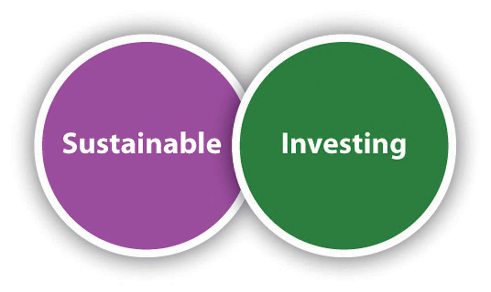
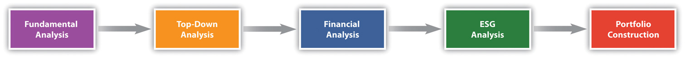
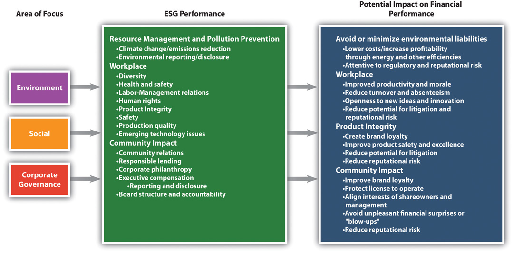

Pax World had primarily relied on exclusion, for example, negative screens, for avoidance of undesired companies to invest in. However, the resistance to the screening out of some companies among traditional investors led Pax World, in 2006, to change their approach from socially responsible investing (SRI) to “sustainable investing.”
To Pax World, sustainable investing is similar to and has its origins in SRI, but it is fundamentally different. For Pax World, sustainable investing involves fully integrating environmental, social, and governance (ESG) factors into investment analysis. So where SRI had tended to define itself by what not to invest in, sustainable investing defines what to invest in.
Table 12.3 Differences between Sustainable Investing and SRI
| Sustainable Investing | SRI |
|---|---|
| Performance-based orientation | Values-based orientation |
| Inclusionary approach—seeks to identify leaders in sustainability | Exclusionary approach—negative “screens” for avoidance of “sin stocks” |
| Striving for broad market acceptance | Niche (“alternative”) investment style |
Pax World’s new methodology allows it to invest in companies that have superior sustainability or ESG performance. By investing in “sustainable” companies, Pax World seeks to reduce risk and deliver competitive long-term investment performance. By combining rigorous financial analysis with equally rigorous ESG analysis, there is an increased level of scrutiny that helps them construct portfolios made up of companies that
The goal is for all the funds to beat the performance of group peer funds, not just other SRI funds. For each of Pax’s funds, this means outperforming on an average return on investment basis funds with similar investment objectives. Pax World’s view is that rigorous financial and ESG analysis will lead to superior fund performance over time. This emanates from the Pax World perspective that companies that do well on both analyses and that execute well on both financial and ESG measures will be the best performers in terms of return for mutual fund investors.
Figure 12.2 Pax World’s Sustainable Investing Approach
Investment analysis is very detailed and difficult work. Pax World’s investment process is a well-defined, systematic, four-step process: (1) top-down analysis, (2) financial analysis, (3) ESG analysis, and (4) portfolio construction. This process takes Pax World from assessing the broad universe of investment opportunities to assessing a selection of investments for its funds. The ESG analysis of the four is the least established and most qualitative.
Figure 12.3 Pax World Investment Process
Deciding how to invest funds starts with a top-down analysisAn information processing strategy where a system is broken down into smaller subsystems. It can also be thought of as a bird’s eye or high-level view of a system, issue, or problem. of domestic and international economies. This involves analysts identifying long-term economic, social, and political trends and their investment implications. This global economic analysis can include the interest rate environment, consumer sentiment, and unemployment. The top-down analysis helps to determine the broad sectors of the economy for Pax World funds to invest in and, more specifically, to overinvest or underinvest in relative to benchmarks by fund type average.
The major themes in 2011, for example, included aging population demographics in developing nations (including the United States, Japan, and many European nations), the growth of emerging markets (such as China, India, and Brazil), and strong demand for and limited supply of natural resources (which puts price pressure on many commodities).
The top-down analysis also includes identification of some shorter-term factors. In 2011, this included the economic recession and low consumer confidence.
The 2011 themes suggested that Pax World funds invest in industries that benefit from (e.g., sell in or to) aging demographics, commodities, and emerging markets over and above the percentages in the benchmark fund. Specific industries to invest in the 2011 market, for example, would include construction, mining and utility equipment companies with a majority of their sales in emerging nations, and consumer product companies with more than 50 percent of sales in emerging markets.
The next step involves fundamental financial analysisIn-depth financial analysis performed on an individual security basis to identify superior investment opportunities.. This is in-depth financial analysis on an individual company basis to identify companies that appear to offer above-average relative growth rates, sound business models, strong competitive positioning, and attractive valuations. Pax World financial analysts target individual companies or stocks in their specified industry sectors. Each financial analyst is responsible for three sectors.
Company financial fundamentals are reviewed mostly using financial information that is available for all publically traded companies and required by governmental regulatory bodies including the Securities and Exchange Commission (SEC) in the United States. Companies within industries are compared based on their profitability, growth, valuation, and quality. Income statement and balance sheet information for companies, including returns on equity and assets, long- and short-term growth in earnings, price-to-earnings ratio, and debt-to-capital ratio are considered along with other financial information.
Pax financial analysts determine overall rankings of companies in targeted industries by using a weighted composite measure. In most cases, the top twenty-fifth percentile of performers in the targeted industries are identified for potential investment. In addition, financial analysts review the financial performance of all the holdings regularly.
If a company passes the financial test and is among the top twenty-fifth percentile in a targeted industry it will go to the sustainability research team, and they will do an environmental, social, and governance (ESG) analysisEvaluation of the quality of corporate management with respect to environmental, social, and governance criteria.. ESG analysis involves an evaluation based on ESG criteria. The ESG analysis includes review of company ESG performance with three views—past performance, current policy, and future trajectory. A company with poor prior performance, improved current policy, and positive future trajectory would be more favorably rated than a company with static moderate performance. The review by ESG analysts results in companies passing, failing, or passing but requiring monitoring. For example, Pax World was monitoring BP just prior to the BP Gulf of Mexico oil spill in 2010.
Environmental considerations include whether there has been company violations of environmental laws (such as the Clean Air Act and Clean Water Act in the United States), the company’s record of management of emissions, climate change–related policies and actions, and renewable energy use or development. On social issues, consideration is given to human rights issues in countries in which companies operate, for example, treatment and rights of women and workforce issues, such as worker safety, child labor laws, and minimum wages. On governance, the key issues assessed include board independence (e.g., the percentage of outside directors), diversity of board (including percentage of females on the board), and executive compensation practices and policies.
The sources of information used for the ESG analysis include company reporting in annual reports and in separate sustainability reports. The latter are increasing in numbers as companies, particularly larger companies and companies in Europe, are providing sustainability reports (see Chapter 4 "Accountability for Sustainability"). Other key sources of information include government data (e.g., from the US government’s Food and Drug Administration [FDA], Occupational Safety and Health Administration [OSHA], and Environmental Protection Agency [EPA]); news coverage and composite reporting of news coverage from Dow Jones Factiva (http://www.dowjones.com/factiva/index.asp); other third-party sources, such as MSCI ESG Research (http://www.msci.com/products/esg/about_msci_esg_research.html), Goldman Sachs, and the Corporate Library (http://www2.gmiratings.com); and nongovernmental organizations (NGO), such as Silicon Valley Toxics Coalition (http://svtc.org/resources/reports).
Smaller companies are harder to get information on, as are many companies in the developing markets. Some countries require a lot of disclosure and some don’t; it varies greatly. In general, publically traded companies in the United States and Western Europe are required to disclose information on financial, environmental, and social factors that will affect their market value but there is significant discretion in doing this.
Big companies, such as General Electric, Exxon-Mobil, Starbucks, and Walmart, have a lot of ESG information available through media attention, NGOs, and other watchdog groups. They’re pretty transparent and increasingly so. But as you go down the capitalization scale, smaller companies are not as transparent, so it can be harder to research a smaller company or a company in an emerging market. These are some of the factors Pax World Management ESG analysts have to deal with. It gets more or less complicated depending on what company they are researching.
Figure 12.4 Examples of Pax World’s ESG Factors
The ESG analysis team’s long-term goal is to be able to assess a larger number of companies on ESG performance (not just those provided to them in the top twenty-fifth percentile according to traditional financial criteria) and, over time, to be able identify companies that are strongest in ESG performance and based on that identifying if the company should be considered for Pax fund investment by the financial analysts. This would enable a more interactive and dynamic investment selection process with more active ESG consideration.
In order to get to this, and to be able to identify companies in percentiles of ESG performance, ESG analysts have to be able to more formally and fully quantify their analysis. While the ESG analysis has made substantial progress in being more quantitative, structured, and rigorous from its start in 1971, the ESG analysis remains limited to quantitative final assessment of pass or fail, without precise definition or measurement of ESG performance. Part of this is a result of the limited data available and the difficulty of collecting the data that might be available, but it might more strongly reflect the relative newness of ESG analytics compared to traditional financial investment analysis, which has been developing for more than one hundred years. This is true at Pax World and with SRI funds in general.
An example of a company that made it through Pax’s financial review process, but not the ESG process, is Suez Environment. Suez is a utility company based in France that operates largely in the water treatment and waste management sectors (http://www.suez-environnement.com/en/homepage), providing drinking water to seventy-six million people worldwide.
Suez was identified as being in a growing industry and emerging as an industry leader with strong financials in that industry. The company failed the ESG review based on a number of negative factors, including employee tampering with water supply testing, high incidence of worker injury, and antitrust investigation by the European Union.
Portfolio constructionChoosing a select number of companies that meet criteria that emerge from the combination of financial and ESG analysis to be included in the fund. involves choosing a select number of companies that emerge from the combination of financial and ESG analysis and that meet both the financial and sustainability criteria and, as a portfolio, the overall investment guidelines of individual funds (e.g., targeted percentages for bonds and stocks). This entire process is repeated as new insights are developed or economic conditions change.
Every company in the Pax World mutual fund portfolio is reviewed from a financial and ESG perspective on a periodic basis, mostly annually.